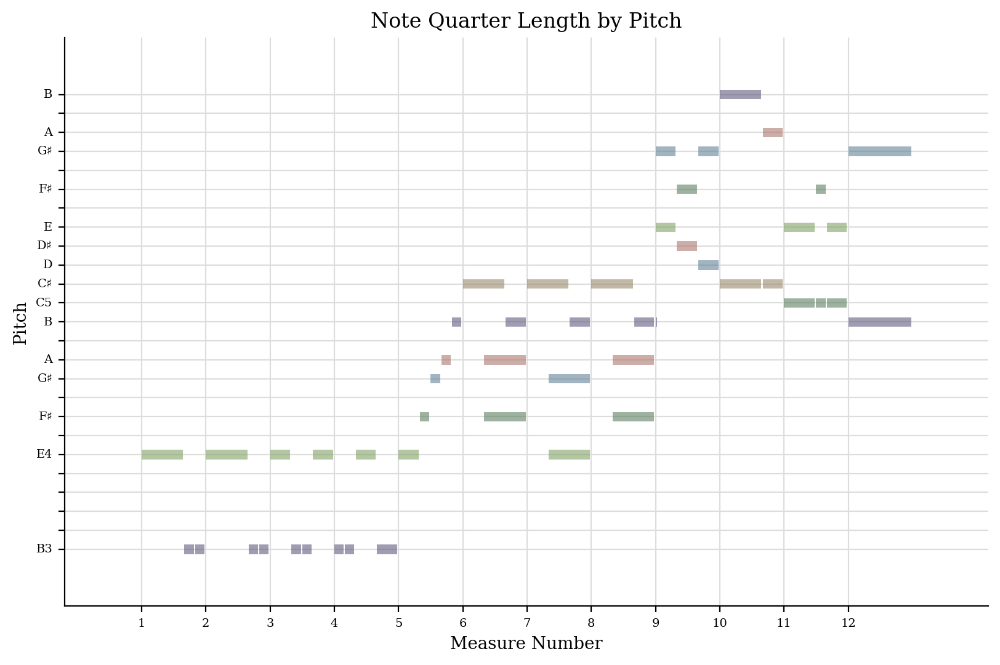
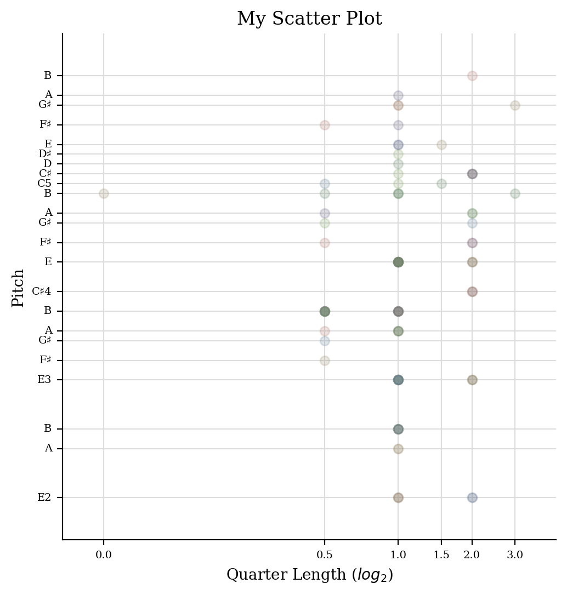

CSV File
Range: 33
Mean Pitch: 56 (G#3)
Most Common Pitch Class: 11 (B1)
Number of Common Pitches: 5
Number of Common Pitch Classes: 2
Last Pitch: 59 (B3)
Stepwise Motion: 0.3077
Melodic Perfect Fourths: 0.4359
Most Common Rhythmic Value: 1
This data provides significant insights into the statistics of every aspect of the piece. Since I know the piece is in E major, it makes sense that the mean pitch and the most common pitch class are G# and B, which are both in the E major chord (even though E would usually be the most common, this particular segment of this piece clearly doesn't have the root note as the most common note). Even if I didn't know which key the piece was in, I would be able to guess by looking at the most common pitches and pitch classes. The difference between these is that pitch classes include enharmonically equivalent notes (e.g. G# and Ab) as well as the same note in different octaves. I also found the melodic motion statistics interesting, because looking at the sheet music itself, you can observe that it consists of a lot of intervals of a perfect 4th (B to E), so it makes sense to see this in the analysis of having 43.59% of the melodic intervals being perfect fourths.
From the histogram, we can deduct that the most common pitches are, in order, B3, E4, and E3. From the piano roll, you can deduct general rhythmic patterns as well as a contour of the melody, whether it goes up or down and at what measure. It also can give structure/form to the song, so you can visually distinguish different parts from each other. From the scatter plot, we can see patterns in note durations and which notes tend to be which duration. There is some weight on the line for quarter length 1.0, which signifies a relatively larger amount of quarter notes. Overall, these graphs help plot the structure, patterns, and notes into an easily-readible graph for further analysis and comparison.